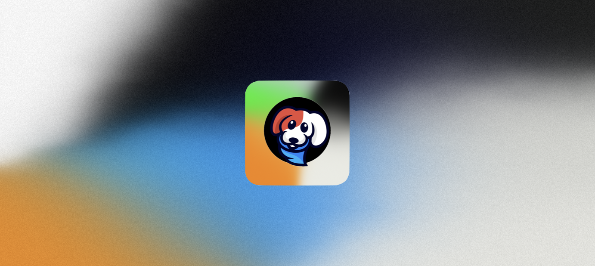

Bobbo
Simplifying Care, Enhancing Lives
This app is designed to make life easier for you and your best friend, enabling you to focus on what truly matters - the bond between you and spending quality time together with optimal health. After all, that's what's most important. With unwavering commitment to your privacy and data protection, we're embarking on an exciting journey. There's so much to accomplish, and we hope to achieve it... Together.